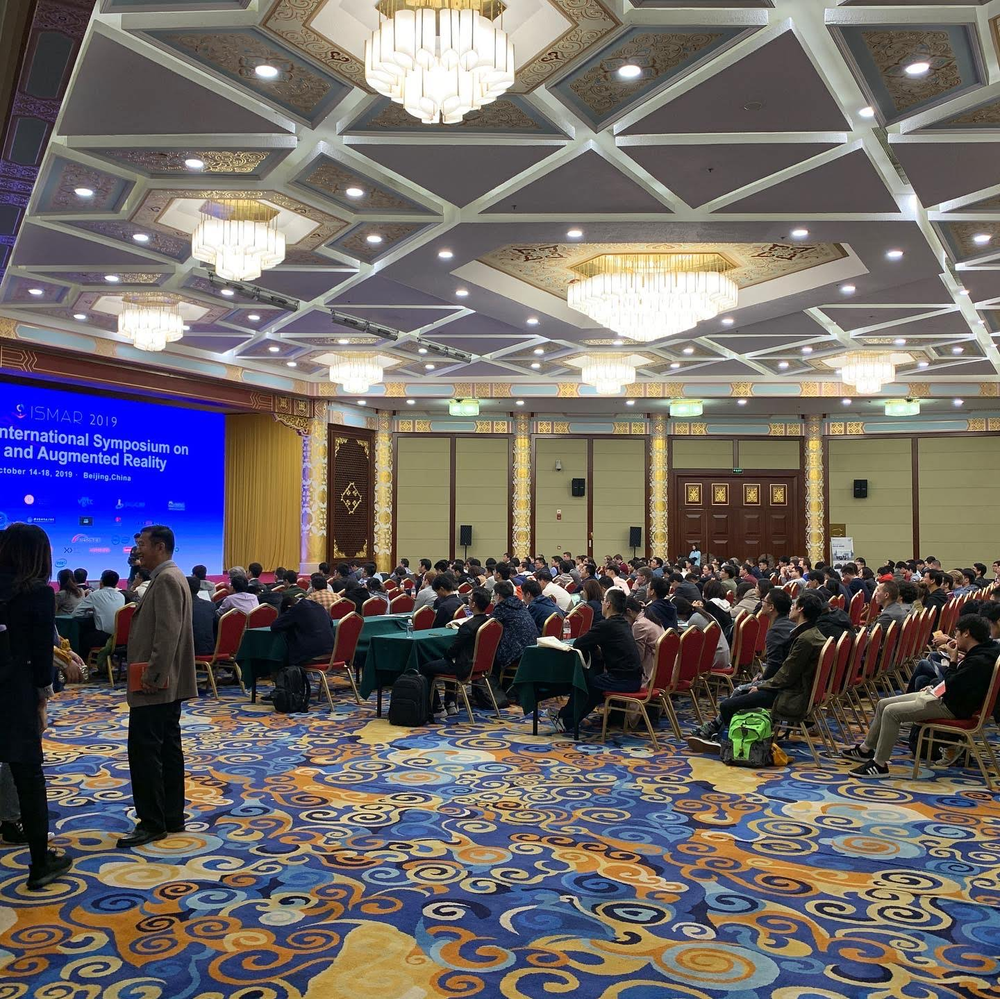
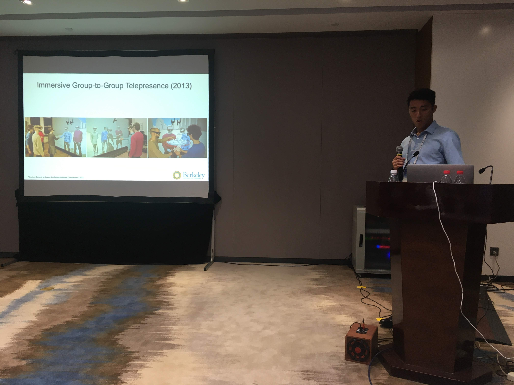
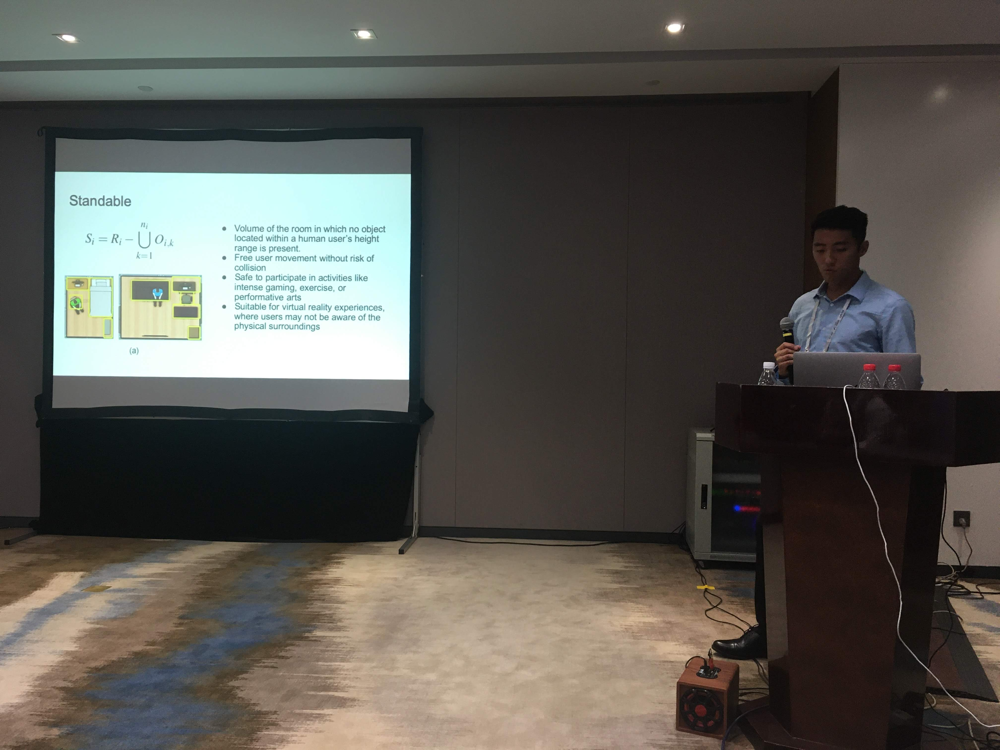
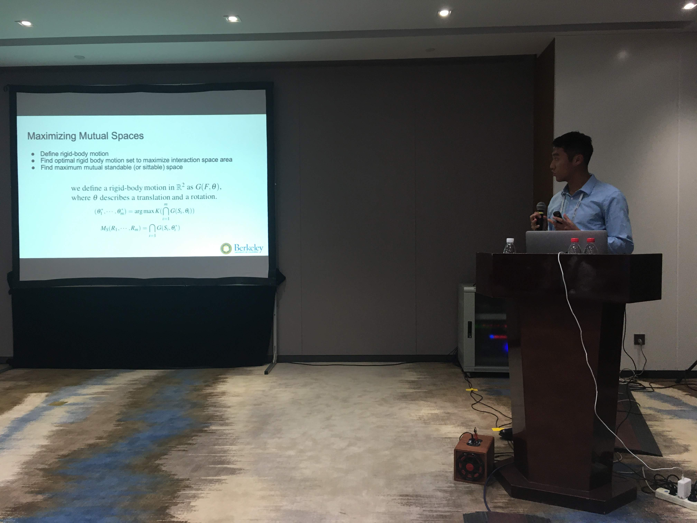
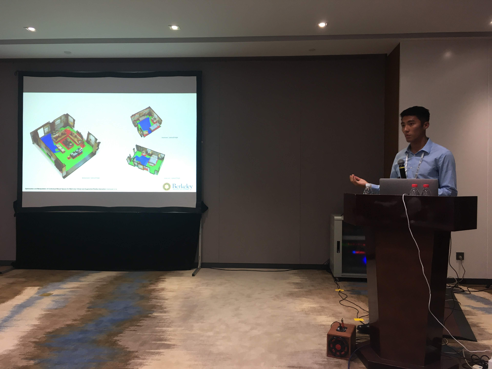
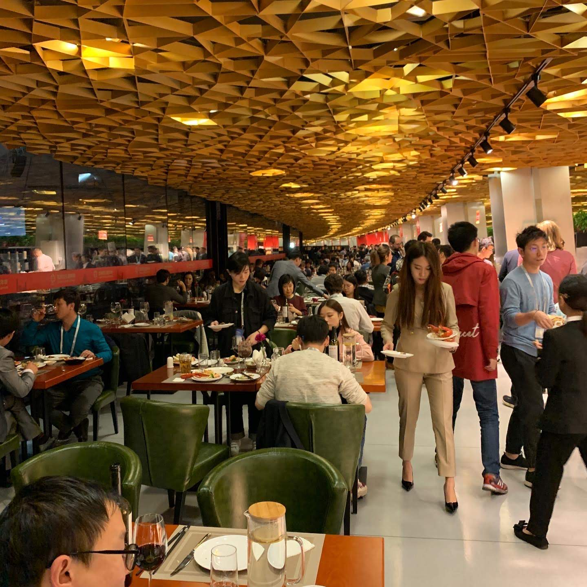

ISMAR Presentation






ISMAR Tutorial Presentation
- Category: Research
- People: Allen Yang (Tutorial Co-Lead), Joseph Menke (Tutorial Co-Lead)
- Labs/Partners: FHL Vive Center for Enhanced Reality, XR Lab - Virtual, Augmented and Mixed Reality Laboratory (UC Berkeley College of Environmental Design)
- Project Links:
- My ISMAR presentation slides
- Berkeley OpenARK Tutorial Overview
Refer to slides above